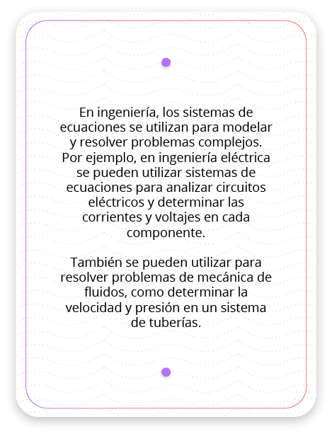
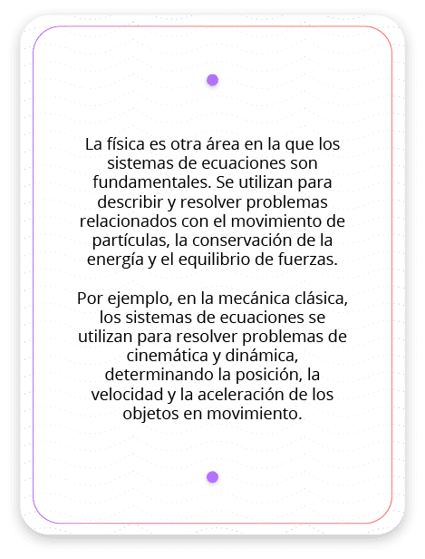
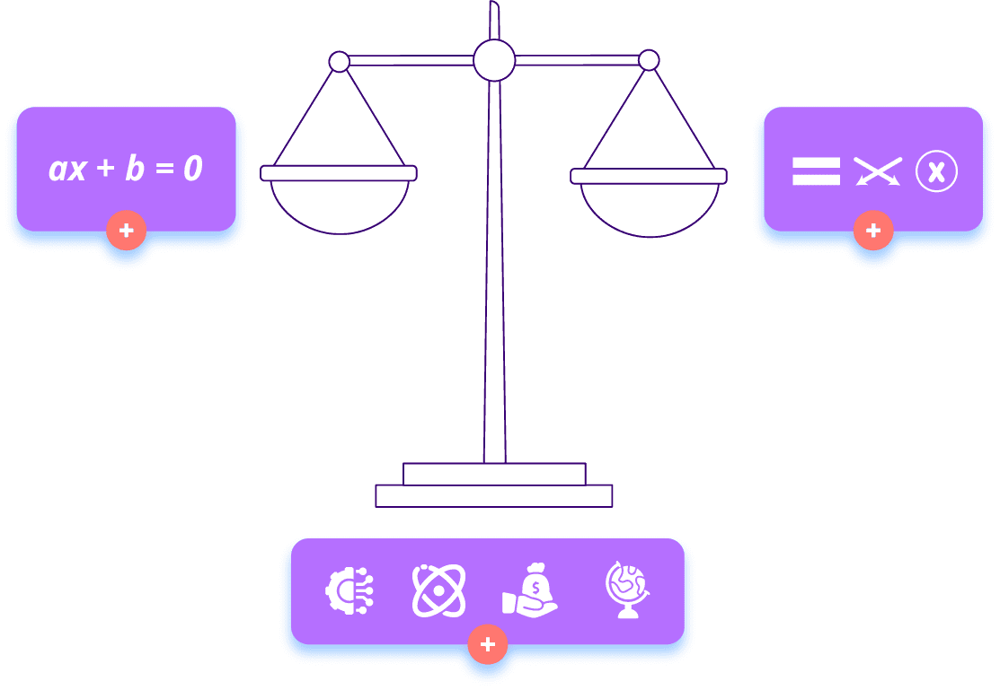

Progreso
Progreso
 Créditos
Créditos
 Bibliografía
Bibliografía
Introducción a las ecuaciones lineales y sistemas de ecuaciones
Introducción a las ecuaciones lineales
Las ecuaciones lineales son ecuaciones algebraicas en las que las variables están elevadas a la potencia 1 y se encuentran multiplicadas por coeficientes numéricos. Estas ecuaciones se caracterizan por tener soluciones que forman una línea recta cuando se representan gráficamente en un plano cartesiano.
\(ax+b=0\)
Donde "a" y "b" son coeficientes numéricos y "x" es la variable. El objetivo de resolver una ecuación lineal es encontrar el valor de la variable "x" que satisface la igualdad.
¿Qué es un sistema de ecuaciones?
Un sistema de ecuaciones es un conjunto de dos o más ecuaciones que tienen variables en común. La resolución de un sistema de ecuaciones implica encontrar los valores de las variables que satisfacen todas las ecuaciones simultáneamente. En general, un sistema de ecuaciones puede tener una o ninguna solución, o puede tener infinitas soluciones.
Existen diferentes métodos para resolver sistemas de ecuaciones, como el método de igualación, el método de sustitución y el método de eliminación. Estos métodos permiten simplificar las ecuaciones y encontrar las soluciones de manera eficiente.
¿Por qué son importantes las ecuaciones lineales y los sistemas de ecuaciones lineales?
- Las ecuaciones lineales son fundamentales en la resolución de problemas matemáticos y también tienen aplicaciones prácticas en muchos campos, como la física, la ingeniería y la economía. Estas ecuaciones nos permiten modelar situaciones donde existe una relación lineal entre distintas variables y nos ayudan a encontrar soluciones o valores desconocidos.
- Resolver sistemas de ecuaciones es esencial en muchas áreas de estudio. Por ejemplo, en la ingeniería se utilizan para modelar sistemas físicos complejos, como circuitos eléctricos o estructuras mecánicas. En la economía, se utilizan para analizar relaciones entre variables como la oferta y la demanda. También son fundamentales en la resolución de problemas en ciencias exactas como la química y la física.
- Además, la resolución de sistemas de ecuaciones permite obtener información valiosa sobre las relaciones entre variables y realizar predicciones o estimaciones en base a los resultados obtenidos.
Introducción a las ecuaciones lineales y sistemas de ecuaciones
Métodos de resolución de ecuaciones lineales
En este video encontrarás información sobre los diferentes métodos de resolución de ecuaciones lineales. Si deseas explorar uno en específico, te dejamos los minutos en los que se encuentra cada uno:
- Método de igualación - 0:31
- Método de sustitución - 5:04
- Método de eliminación - 9:25
A continuación, encontrarás un audio y un texto escrito. Te proponemos escuchar el audio mientras lees, así podrás identificar los ejemplos y las expresiones matemáticas. Siéntete libre de pausar el audio cuando quieras detenerte en algún detalle de la lectura.
Métodos de resolución de ecuaciones lineales
Existen diferentes métodos de resolución de ecuaciones lineales, cada uno de ellos con sus propias características y aplicaciones. A continuación, exploraremos los métodos más comunes utilizados para resolver este tipo de ecuaciones, los cuales son “el método de la igualación”, “el método de la sustitución” y “el método de la eliminación”.
Método de igualación
El método de igualación es una técnica que se utiliza para resolver sistemas de ecuaciones lineales. Para aplicar este método, sigue estos pasos:
Paso 1. Expresar ambas ecuaciones en función de una misma variable.
Supongamos que tienes un sistema de dos ecuaciones lineales como este:
Ecuación 1: 2x-3y=7
Ecuación 2: 4x+5y=11
El primer paso es expresar ambas ecuaciones en términos de una misma variable. Puedes elegir una de las variables (x o y) para igualar en ambas ecuaciones. En este ejemplo, vamos a igualar x:
Ecuación 1: x=(3y+7)/2
Ecuación 2: x=(-5y+11)/4
Paso 2. Igualar las expresiones obtenidas.
Ahora que ambas ecuaciones tienen el mismo valor de x, igualamos las dos expresiones:
(3y+7)/2=(-5y+11)/4
4(3y+7)=2(-5y+11)
12y+28=-10y+22
Paso 3. Resolver la ecuación resultante.
Resolvemos la ecuación obtenida en el paso anterior para encontrar el valor de y. Primero, podemos mover todos los términos con y hacia un lado de la ecuación y los términos sin y hacia el otro lado:
12y+10y=22-28
Esto simplifica a:
22y=-6
Ahora, dividimos ambos lados de la ecuación por 22 para despejar y :
y=-6/22
y=-3/11
Paso 4. Sustituir el valor de y en una de las ecuaciones originales para encontrar el valor de x.
Volvemos a una de las ecuaciones originales para encontrar el valor de x. Usaremos la Ecuación 1: 2x-3y=7
Sustituimos el valor de y
2x-3(-3/11)=7
2x+9/11=7
Ahora, restamos -9/11 de ambos lados:
2x+9/11-9/11=7-9/11
2x=7-9/11
2x=77-9/11
2x=68/11
Para despejar x, dividimos ambos lados por 2:
2x/2=(68/11)/2
x=68/22
Simplificamos:
x=34/11
Entonces, la solución del sistema de ecuaciones es x=34/11 y y=-3/11.
Puedes verificar esta solución sustituyendo estos valores en ambas ecuaciones originales para asegurarte de que ambas ecuaciones sean verdaderas.
2(34/11)-3(-3/11)=7
5(-3/11)=11
68/11+9/11=7
77/11=7
7=7
4(34/11)+
136/11-15/11=11
121/11=11
11=11
Método de sustitución
El método de sustitución implica despejar una de las variables en una de las ecuaciones y luego sustituirla en la otra ecuación. De esta manera, se obtiene una nueva ecuación con una sola variable, que puede resolverse de forma más sencilla. Para aplicar este método, sigue estos pasos:
Supongamos que tienes un sistema de dos ecuaciones lineales como este:
x y
Ecuación 1: 2x+3y=11
Ecuación 2: 4x-y=5
Paso 1. Despejar una variable en una de las ecuaciones. Por ejemplo, si tomamos la Ecuación 1:
• 2x+3y=11
• 2x=11-3y
• x=(11-3y)/2
Paso 2. Sustituir la expresión obtenida en el paso anterior en la otra ecuación. Usaremos la Ecuación 2:
• 4x-y=5
Ahora sustituimos la expresión de x que obtuvimos en el paso 1:
• 4((11-3y)/2)-y=5
Paso 3. Resolver la nueva ecuación resultante para encontrar el valor de la variable restante, en este caso, y.
• (44-12y)/2-y=5 Realizamos operación indicada, o sea, la resta.
• (44-12y-2y)/2=5 Simplificamos términos semejantes.
• 44-14y=10
• -14y=10-44 Despejamos la variable restante, o sea,y.
• y=-34/-14 Simplificamos.
• y=17/7
Paso 4. Con el valor de y encontrado, ahora podemos sustituirlo en cualquiera de las ecuaciones originales para encontrar el valor de x. Usaremos la Ecuación 2:
• 4x-(17/7)=5 Realizamos la operación indicada, o sea, la resta.
• (28x-17)/7=5
• 28x-17=35
• 28x=35+17 Despejamos la variable que deseamos encontrar, o sea, la
x.
• x=52/28 Simplificamos.
• x=13/7
Entonces, la solución del sistema de ecuaciones es x=13/7 y y=17/7.
Puedes verificar estos valores sustituyéndolos en ambas ecuaciones originales para asegurarte de que ambas sean verdaderas.
2 (13/7) + 3 (17/7) = 11
26/7+51/7=11
77/7=11
4(13/7)-17/7=5
52/7-17/7=5
35/7=5
Método de eliminación
El método de eliminación se utiliza para resolver sistemas de ecuaciones lineales cuando se busca eliminar una de las variables al sumar o restar las ecuaciones. Para lograr esto, es necesario que las ecuaciones se alineen de manera que, cuando se sumen o resten, una de las variables se cancele y se pueda encontrar la otra. Para aplicar este método, sigue estos pasos:
Supongamos que tienes un sistema de dos ecuaciones lineales como este:
Ecuación 1: 3x+2y=10
Ecuación 2: 2x-4y=-4
Paso 1. Alineamos las ecuaciones de manera que los coeficientes de y sean iguales en valor absoluto. En este caso, podemos multiplicar la Ecuación 1 por 2 para igualar los coeficientes de y:
Ecuación 1 multiplicada por 2.
Nueva ecuación 1: 6x+4y=20
Ecuación 2: 2x-4y=-4
Paso 2. Restamos las ecuaciones para eliminar la variable y. Recuerda que debes restar los términos semejantes.
• (6x+4y) + (2x-4y) =20+(-4)
• (6x+2x) y (4y-4y) =20-4
• 8x+0=16
Paso 3. Despejamos la variable x para hallar su valor, obteniendo:
• x=16/8 Simplificamos.
• x=2
Paso 4. Sustituimos el valor de x encontrado en una de las ecuaciones originales, para este caso en la ecuación 2.
• 2x-4y=-4 Ecuación original (2).
• 2(2)-4y=-4 Sustituimos el valor de x.
• 4-4y=-4 Realizamos la operación indicada.
• -4y=-4-4 Despejamos y.
• -4y=-8
• y=-8/-4 Simplificamos.
• y=2
Ahora que tenemos los valores de x y y, la solución del sistema de ecuaciones es x=2 y y=2.
Puedes verificar estos valores sustituyéndolos en ambas ecuaciones originales para asegurarte de que ambas sean verdaderas:
3(2)+2(2)=10
6+4=10
10=10
2(2)-4(2)=-4
4-8=-4
-4=-4
Estos métodos de resolución de ecuaciones lineales son herramientas fundamentales para el estudio de las matemáticas y su aplicación en diferentes áreas. Familiarizarse con ellos y aprender a utilizarlos de manera adecuada es esencial para resolver problemas y encontrar soluciones numéricas o algebraicas precisas.
Te invitamos a realizar un emocionante recorrido que potenciará tu aprendizaje. Para ello, sigue estos pasos:
-
Explora la simulación: te invitamos a navegar por la siguiente simulación. Tómate tu tiempo para observar, interactuar y comprender los diferentes elementos presentados.
https://phet.colorado.edu/sims/html/equality-explorer/latest/equality-explorer_all.html?locale=es
-
Interactivo educativo: luego de explorar la simulación, ingresa al siguiente interactivo y revisa todo el contenido. Aquí podrás profundizar en los conceptos y adquirir un entendimiento más completo.
-
Aplicación práctica: finalmente, regresa a la simulación y relaciona los elementos aprendidos. Aplica tu nuevo conocimiento y observa cómo todo cobra sentido en un contexto práctico.
https://phet.colorado.edu/sims/html/equality-explorer/latest/equality-explorer_all.html?locale=es
¡Disfruta del recorrido y aprende de manera divertida e interactiva!
Aplicaciones de los sistemas de ecuaciones en problemas del mundo real
Los sistemas de ecuaciones son un conjunto de expresiones matemáticas que se resuelven simultáneamente para encontrar los valores de las variables que satisfacen todas las ecuaciones. Estas herramientas tienen una amplia gama de aplicaciones en problemas del mundo real, desde la ingeniería y la física hasta la economía y las ciencias sociales.
Ingeniería
En ingeniería, los sistemas de ecuaciones se utilizan para modelar y resolver problemas complejos. Por ejemplo, en ingeniería eléctrica se pueden utilizar sistemas de ecuaciones para analizar circuitos eléctricos y determinar las corrientes y voltajes en cada componente. También se pueden utilizar para resolver problemas de mecánica de fluidos, como determinar la velocidad y presión en un sistema de tuberías.
Física
La física es otra área en la que los sistemas de ecuaciones son fundamentales. Se utilizan para describir y resolver problemas relacionados con el movimiento de partículas, la conservación de la energía y el equilibrio de fuerzas. Por ejemplo, en la mecánica clásica, los sistemas de ecuaciones se utilizan para resolver problemas de cinemática y dinámica, determinando la posición, la velocidad y la aceleración de los objetos en movimiento.
Economía
En economía, los sistemas de ecuaciones se utilizan para modelar y analizar situaciones financieras y de oferta y demanda. Por ejemplo, se pueden utilizar para determinar el equilibrio de un mercado, encontrando los precios y las cantidades en las que la oferta iguala la demanda. También se utilizan para analizar el crecimiento económico, modelando la relación entre la inversión, el consumo y el nivel de empleo.
Ciencias sociales
En las ciencias sociales, los sistemas de ecuaciones se utilizan para modelar y entender fenómenos complejos. Por ejemplo, se pueden utilizar para analizar la interacción entre diferentes variables en un sistema social, como la relación entre la educación, el ingreso y la calidad de vida. También se pueden utilizar para estudiar la propagación de enfermedades, modelando la tasa de infección y recuperación en una población.
En resumen, los sistemas de ecuaciones son una herramienta matemática poderosa y versátil que se utiliza en una amplia variedad de problemas del mundo real. Desde la ingeniería y la física hasta la economía y las ciencias sociales, estos sistemas permiten modelar y resolver situaciones complejas, ayudándonos a entender y tomar decisiones sobre nuestro entorno y sociedad.
Los sistemas de ecuaciones son un conjunto de expresiones matemáticas que se resuelven simultáneamente para encontrar los valores de las variables que satisfacen todas las ecuaciones. Estas herramientas tienen una amplia gama de aplicaciones en problemas del mundo real, desde la ingeniería y la física hasta la economía y las ciencias sociales.
Ingeniería
En ingeniería, los sistemas de ecuaciones se utilizan para modelar y resolver problemas complejos. Por ejemplo, en ingeniería eléctrica se pueden utilizar sistemas de ecuaciones para analizar circuitos eléctricos y determinar las corrientes y voltajes en cada componente. También se pueden utilizar para resolver problemas de mecánica de fluidos, como determinar la velocidad y presión en un sistema de tuberías.
En resumen, los sistemas de ecuaciones son una herramienta matemática poderosa y versátil que se utiliza en una amplia variedad de problemas del mundo real. Desde la ingeniería y la física hasta la economía y las ciencias sociales, estos sistemas permiten modelar y resolver situaciones complejas, ayudándonos a entender y tomar decisiones sobre nuestro entorno y sociedad.
Los sistemas de ecuaciones son un conjunto de expresiones matemáticas que se resuelven simultáneamente para encontrar los valores de las variables que satisfacen todas las ecuaciones. Estas herramientas matemáticas tienen una amplia gama de aplicaciones en problemas del mundo real, desde la ingeniería y la física hasta la economía y las ciencias sociales.
| Ingeniería | ... |
|---|---|
| Física | ... |
| Economía | ... |
| Ciencias sociales | ... |
Listado de opciones:
Da vuelta a cada una de las tarjetas, escucha el audio y reconoce las aplicaciones del tema que estás estudiando.



Veamos algunos ejemplos
1. Resolviendo una ecuación lineal
Resuelve la siguiente ecuación lineal 3x+5=17 . Encuentra el valor de x
3x+5=17
3x=17-5
3x=12
x=12/3
x=4
2. Método de sustitución
Resuelve el siguiente sistema de ecuaciones utilizando el método de sustitución.
Ecuación 1: 2x+3y=7 y Ecuación 2: 3x+2y=8
-
Despejamos una de las dos incógnitas en la ecuación 1. Para este caso
despejaremos x
2x+3y=7
2x=7-3y
x=(7-3y)/2 -
Reemplazamos la incógnita x en la ecuación 2 y solucionamos.
3x+2y=8
3((7-3y)/2)+2y=8
(21-9y)/2+2y=8
(21-9y+4y)/2=8
21-5y=16
-5y=16-21
y=-5/-5
y=1 -
Reemplazamos el valor de y en alguna de las dos ecuaciones. Para este
caso, la
reemplazaremos en la Ecuación 1.
2x+3y=7
2x+3(1)=7
2x+3=7
2x=7-3
2x=4
x=4/2
x=2 -
Comprobamos que la solución sea correcta reemplazando el valor de x y
y en las ecuaciones iniciales.
Ecuación 1: 2x+3y=7
2(2)+3(1)=7
4+3=7
7=7Ecuación 2: 3x+2y=8
3(2)+2(1)=8
6+2=8
8=8
3. Problema de mezcla de ingredientes
Se tienen dos tipos de mezcla de ingredientes, una contiene 40 % de azúcar y la otra contiene 25 % de azúcar. Se necesita obtener 50 litros de una tercera mezcla que contenga 30 % de azúcar. ¿Cuántos litros de cada mezcla se deben usar?
Para resolver este problema de mezcla, podemos plantear un sistema de ecuaciones basado en la cantidad de azúcar en cada mezcla y en la mezcla final. Llamaremos x a la cantidad de litros de la primera mezcla (40 % de azúcar), y y, a la cantidad de litros de la segunda mezcla (25 % de azúcar) que se utilizará.
Tenemos dos ecuaciones basadas en la cantidad de azúcar y la cantidad total de mezcla:
La ecuación de azúcar es:
Ecuación 1: 0.40x+0.25y=0.30*50
La ecuación de cantidad total es:
Ecuación 2: x+y=50
La primera ecuación representa que la cantidad total de azúcar en la mezcla final debe ser el 30 % de 50 litros, y la segunda ecuación representa que la suma de la cantidad de la primera mezcla (x) y la cantidad de la segunda mezcla (y) debe ser igual a 50 litros en total.
Ahora, vamos a resolver este sistema de ecuaciones. Ahora, vamos a resolver este sistema de ecuaciones. Primero, resolvamos la Ecuación 2 para x:
x= 50-y
Luego, sustituimos este valor de x en la ecuación 1:
0.40(50-y)+0.25y=0.30*50
Ahora, simplificamos y resolvemos la ecuación:
20-0.40y+0.25y=15
Combinamos términos semejantes:
-0.15y=-5
Despejamos y:
y=-5/-0.15=33.33 litros
Ahora que tenemos el valor de y , podemos encontrar el valor de x utilizando la ecuación de cantidad total:
x= 50-33.33=16.67 litros
Sin embargo, dado que estamos trabajando con litros de mezcla, los valores de x y y deben ser números enteros, ya que no podemos tener una fracción de litro en una mezcla. Por lo tanto, debemos redondear estos valores al entero más cercano.
Conclusión: entonces, se necesitan aproximadamente 17 litros de la primera mezcla (40 % de azúcar) y aproximadamente 33 litros de la segunda mezcla (25 % de azúcar) para obtener 50 litros de una mezcla final que contiene 30 % de azúcar.
1. Resolviendo una ecuación lineal
Resuelve la siguiente ecuación lineal 3x+5=17 . Encuentra el valor de x
3x+5=17
3x=17-5
3x=12
x=12/3
x=4
2. Método de eliminación para resolver sistemas de ecuaciones
Resuelve el siguiente sistema de ecuaciones utilizando el método de sustitución.
Ecuación 1: 2x+3y=7 y Ecuación 2: 3x+2y=8
-
Despejamos una de las
dos incógnitas en la ecuación 1. Para este caso despejaremos x.
2x+3y=7
2x=7-3y
x=(7-3y)/2 -
Reemplazamos la incógnita x en la ecuación 2 y solucionamos.
3x+2y=8
3((7-3y)/2)+2y=8
(21-9y)/2+2y=8
(21-9y+4y)/2=8
21-5y=16
-5y=16-21
y=-5/-5
y=1 -
Reemplazamos el valor de y en alguna de las dos ecuaciones. Para este
caso, la
reemplazaremos en la Ecuación 1.
2x+3y=7
2x+3(1)=7
2x+3=7
2x=7-3
2x=4
x=4/2
x=2 -
Comprobamos que la solución sea correcta reemplazando el valor de x y
y en las ecuaciones iniciales.
Ecuación 1: 2x+3y=7
2(2)+3(1)=7
4+3=7
7=7Ecuación 2: 3x+2y=8
3(2)+2(1)=8
6+2=8
8=8
3. Problema de mezcla de ingredientes
Se tienen dos tipos de mezcla de ingredientes, una contiene 40 % de azúcar y la otra contiene 25 % de azúcar. Se necesita obtener 50 litros de una tercera mezcla que contenga 30 % de azúcar. ¿Cuántos litros de cada mezcla se deben usar?
Para resolver este problema de mezcla, podemos plantear un sistema de ecuaciones basado en la cantidad de azúcar en cada mezcla y en la mezcla final. Llamaremos x a la cantidad de litros de la primera mezcla (40 % de azúcar), y y, a la cantidad de litros de la segunda mezcla (25 % de azúcar) que se utilizará.
Tenemos dos ecuaciones basadas en la cantidad de azúcar y la cantidad total de mezcla:
La ecuación de azúcar es:
Ecuación 1: 0.40x+0.25y=0.30*50
La ecuación de cantidad total es:
Ecuación 2: x+y=50
La primera ecuación representa que la cantidad total de azúcar en la mezcla final debe ser el 30 % de 50 litros, y la segunda ecuación representa que la suma de la cantidad de la primera mezcla (x) y la cantidad de la segunda mezcla (y) debe ser igual a 50 litros en total.
Ahora, vamos a resolver este sistema de ecuaciones. Primero, resolvamos la segunda ecuación 2 para x:
x= 50-y
Luego, sustituimos este valor de x en la primera ecuación 1:
0.40(50-y)+0.25y=0.30*50
Ahora, simplificamos y resolvemos la ecuación:
20-0.40y+0.25y=15
Combinamos términos semejantes:
-0.15y=-5
Despejamos y:
y=-5/-0.15=33.33 litros
Ahora que tenemos el valor de y , podemos encontrar el valor de x utilizando la ecuación de cantidad total:
x= 50-33.33=16.67 litros
Sin embargo, dado que estamos trabajando con litros de mezcla, los valores de x y y deben ser números enteros, ya que no podemos tener una fracción de litro en una mezcla. Por lo tanto, debemos redondear estos valores al entero más cercano.
Conclusión
Entonces, se necesitan aproximadamente 17 litros de la primera mezcla (40 % de azúcar) y aproximadamente 33 litros de la segunda mezcla (25 % de azúcar) para obtener 50 litros de una mezcla final que contiene 30 % de azúcar.
Haz clic en los números para ir a cada tema.
Resolviendo
una ecuación lineal
Resuelve la siguiente ecuación lineal 3x+5=17. Encuentra el valor de x.
3x+5=17
3x=17-5
3x=12
x=12/3
x=4
Método de eliminación
para resolver sistemas de ecuaciones
Resuelve el siguiente sistema de ecuaciones utilizando el método de sustitución.
Ecuación 1: 2x+3y=7 y Ecuación 2: 3x+2y=8
Despejamos una de las dos incógnitas en la ecuación 1. Para este caso despejaremos x.
2x+3y=7
2x=7-3y
x=(7-3y)/2
Reemplazamos la incógnita x en la ecuación 2 y solucionamos
3x+2y=8
3((7-3y)/2)+2y=8
(21-9y)/2+2y=8
(21-9y+4y)/2=8
21-5y=16
-5y=16-21
y=-5/-5
y=1
Reemplazamos el valor de y en alguna de las dos ecuaciones. Para este caso, la reemplazaremos en la Ecuación 1.
2x+3y=7
2x+3(1)=7
2x+3=7
2x=7-3
2x=4
x=4/2
x=2
Comprobamos que la solución sea correcta reemplazando el valor de x y y en las ecuaciones iniciales.
Ecuación 1:
2x+3y=7
2(2)+3(1)=7
4+3=7
7=7
Ecuación 2:
3x+2y=8
3(2)+2(1)=8
6+2=8
8=8
Problema de mezcla
de ingredientes
Se tienen dos tipos de mezcla de ingredientes, una contiene 40 % de azúcar y la otra contiene 25 % de azúcar. Se necesita obtener 50 litros de una tercera mezcla que contenga 30 % de azúcar. ¿Cuántos litros de cada mezcla se deben usar?
Para resolver este problema de mezcla, podemos plantear un sistema de ecuaciones basado en la cantidad de azúcar en cada mezcla y en la mezcla final. Llamaremos x a la cantidad de litros de la primera mezcla (40 % de azúcar), y y, a la cantidad de litros de la segunda mezcla (25 % de azúcar) que se utilizará.
Tenemos dos ecuaciones basadas en la cantidad de azúcar y la cantidad total de mezcla:
La ecuación de azúcar es:
Ecuación 1: 0.40x+0.25y=0.30*50
La ecuación de cantidad total es:
Ecuación 2: x+y=50
La primera ecuación representa que la cantidad total de azúcar en la mezcla final debe ser el 30 % de 50 litros, y la segunda ecuación representa que la suma de la cantidad de la primera mezcla (x) y la cantidad de la segunda mezcla (y) debe ser igual a 50 litros en total.
Ahora, vamos a resolver este sistema de ecuaciones. Primero, resolvamos la segunda ecuación (2) para x:
x= 50-y
Luego, sustituimos este valor de x en la primera ecuación 1:
0.40(50-y)+0.25y=0.30*50
Ahora, simplificamos y resolvemos la ecuación:
20-0.40y+0.25y=15
Combinamos términos semejantes:
-0.15y=-5
Despejamos y:
y=-5/-0.15=33.33 litros
Ahora que tenemos el valor de y, podemos encontrar el valor de x utilizando la ecuación de cantidad total:
x= 50-33.33=16.67 litros
Sin embargo, dado que estamos trabajando con litros de mezcla, los valores de x y y deben ser números enteros, ya que no podemos tener una fracción de litro en una mezcla. Por lo tanto, debemos redondear estos valores al entero más cercano.
Entonces, se necesitan aproximadamente 17 litros de la primera mezcla (40 % de azúcar) y aproximadamente 33 litros de la segunda mezcla (25 % de azúcar) para obtener 50 litros de una mezcla final que contiene 30 % de azúcar.
Completa los espacios en blanco con las soluciones a los ejercicios que se encuentran a continuación:
|
Resolviendo una ecuación lineal
|
||
|---|---|---|
|
Método de eliminación para resolver sistemas
de ecuaciones
|
||
|
Problema de mezcla de ingredientes
|
Opciones
Solución 1
3x+5=17
3x=17-5
3x=12
x=12/3
x=4
Solución 2
- Despejamos una de las dos incógnitas en la ecuación 1. Para este caso despejaremos x.
2x+3y=7
2x=7-3y
x=(7-3y)/2
- Reemplazamos la incógnita x en la ecuación 2 y solucionamos.
3x+2y=8
3((7-3y)/2)+2y=8
(21-9y)/2+2y=8
(21-9y+4y)/2=8
21-5y=16
-5y=16-21
y=-5/-5
y=1
- Reemplazamos el valor de y en alguna de las dos ecuaciones. Para este caso, la reemplazaremos en la Ecuación 1.
2x+3y=7
2x+3(1)=7
2x+3=7
2x=7-3
2x=4
x=4/2
x=2
- Comprobamos que la solución sea correcta reemplazando el valor de x y y en las ecuaciones iniciales.
Ecuación 1:
2x+3y=7
2(2)+3(1)=7
4+3=7
7=7
Ecuación 2:
3x+2y=8
3(2)+2(1)=8
6+2=8
8=8
Solución 3
Se tienen dos tipos de mezcla de ingredientes, una contiene 40 % de azúcar y la otra contiene 25 % de azúcar. Se necesita obtener 50 litros de una tercera mezcla que contenga 30 % de azúcar. ¿Cuántos litros de cada mezcla se deben usar?
Para resolver este problema de mezcla, podemos plantear un sistema de ecuaciones basado en la cantidad de azúcar en cada mezcla y en la mezcla final. Llamaremos x a la cantidad de litros de la primera mezcla (40 % de azúcar), y y, a la cantidad de litros de la segunda mezcla (25 % de azúcar) que se utilizará.
Tenemos dos ecuaciones basadas en la cantidad de azúcar y la cantidad total de mezcla:
La ecuación de azúcar es:
Ecuación 1: 0.40x+0.25y=0.30*50
La ecuación de cantidad total es:
Ecuación 2: x+y=50
La primera ecuación representa que la cantidad total de azúcar en la mezcla final debe ser el 30 % de 50 litros, y la segunda ecuación representa que la suma de la cantidad de la primera mezcla (x) y la cantidad de la segunda mezcla (y) debe ser igual a 50 litros en total.
Ahora, vamos a resolver este sistema de ecuaciones. Primero, resolvamos la segunda ecuación (2) para x:
x= 50-y
Luego, sustituimos este valor de x en la primera ecuación 1:
0.40(50-y)+0.25y=0.30*50
Ahora, simplificamos y resolvemos la ecuación:
20-0.40y+0.25y=15
Combinamos términos semejantes:
-0.15y=-5
Despejamos y:
y=-5/-0.15=33.33 litros
Ahora que tenemos el valor de y, podemos encontrar el valor de x utilizando la ecuación de cantidad total:
x= 50-33.33=16.67 litros
Sin embargo, dado que estamos trabajando con litros de mezcla, los valores de x y y deben ser números enteros, ya que no podemos tener una fracción de litro en una mezcla. Por lo tanto, debemos redondear estos valores al entero más cercano.
Conclusión: entonces, se necesitan aproximadamente 17 litros de la primera mezcla (40 % de azúcar) y aproximadamente 33 litros de la segunda mezcla (25 % de azúcar) para obtener 50 litros de una mezcla final que contiene 30 % de azúcar.
Resumen
Haz clic en los botones para ampliar la información.

La introducción a las ecuaciones lineales y sistemas de ecuaciones es fundamental para comprender y resolver problemas matemáticos más complejos. Hasta ahora, hemos aprendido los conceptos básicos de las ecuaciones lineales y cómo representarlas gráficamente. También, hemos explorado los sistemas de ecuaciones y su utilidad en la resolución de problemas del mundo real. La comprensión de estas herramientas matemáticas es crucial para desarrollar habilidades de resolución de problemas y razonamiento lógico.
En la sección de métodos de resolución de ecuaciones lineales, hemos explorado diferentes técnicas algebraicas para encontrar soluciones. Hemos aprendido a usar las propiedades de las operaciones matemáticas y a aplicar métodos como la sustitución, la eliminación y la igualación. Estos métodos nos permiten resolver ecuaciones de forma sistemática y eficiente, facilitando la resolución de problemas de manera precisa y rigurosa.
Finalmente, nos hemos centrado en las aplicaciones de los sistemas de ecuaciones en problemas del mundo real. Hemos encontrado situaciones en las que es necesario resolver un sistema de ecuaciones para encontrar soluciones prácticas. Estos problemas abarcan diferentes áreas, como la economía, la física y la ingeniería, y requieren el uso de técnicas algebraicas y la interpretación de los resultados. Al comprender cómo aplicar los sistemas de ecuaciones en estos contextos, hemos adquirido habilidades para resolver problemas complejos y tomar decisiones informadas.
Prueba tu conocimiento
A continuación, encontrarás cinco preguntas relacionadas con los sistemas de ecuaciones lineales y sus métodos de resolución. Lee detenidamente cada instrucción y elige la respuesta que consideres correcta.
¿Qué es una ecuación lineal? Selecciona una única respuesta.
- Una expresión matemática que establece una igualdad entre dos cantidades.
- Una expresión matemática que establece una igualdad entre dos cantidades y cuyos exponentes son números enteros.
- Una expresión matemática que establece una igualdad entre dos cantidades y cuyos términos son de primer grado.
La solución del siguiente sistema de ecuaciones está dada a partir del método de sustitución. Ordena la solución paso a paso para que encuentres el valor de x y y.
1) x -6y = 27
2) 3x - 3y = 9
Vamos a despejar x en la ecuación 1:
- x - 6y = 27
- x = 27 + 6y
Remplazamos el valor de x en la ecuación 2 y obtenemos:
- y = -72 / 15
- 81 + 15y = 9
- 81 + 18y- 3y = 9
- 15y = 9 - 81
- y = -24 / 5
- 15y = - 72
- 3(27 + 6y) - 3y = 9
Vamos a despejar a:
- (5x + 144) / 5 = 27
- 5x = 135 - 144
- 5x + 144 = 27 * 5
- x - 6 (-24 / 5) =27
- x = -9 / 5
- 5x + 144 = 135
- 5x = -9
- x + (144 / 5) =27
¿Cuál es el primer paso para resolver un sistema de ecuaciones por el método de sustitución? Selecciona Falso o Verdadero.
a. Resolver una de las ecuaciones para una de las variables.
b. Igualar las dos ecuaciones.
c. Sumar las dos ecuaciones.
¿En qué tipo de problemas del mundo real se utilizan los sistemas de ecuaciones? Selecciona mínimo dos opciones.
- Problemas de álgebra lineal.
- Problemas de geometría.
- Problemas de optimización.
- Problemas sobre mezcla de productos.
¿Cuál es el resultado de resolver el sistema de ecuaciones?
x + 2y = 4 y 3x - y = 7.